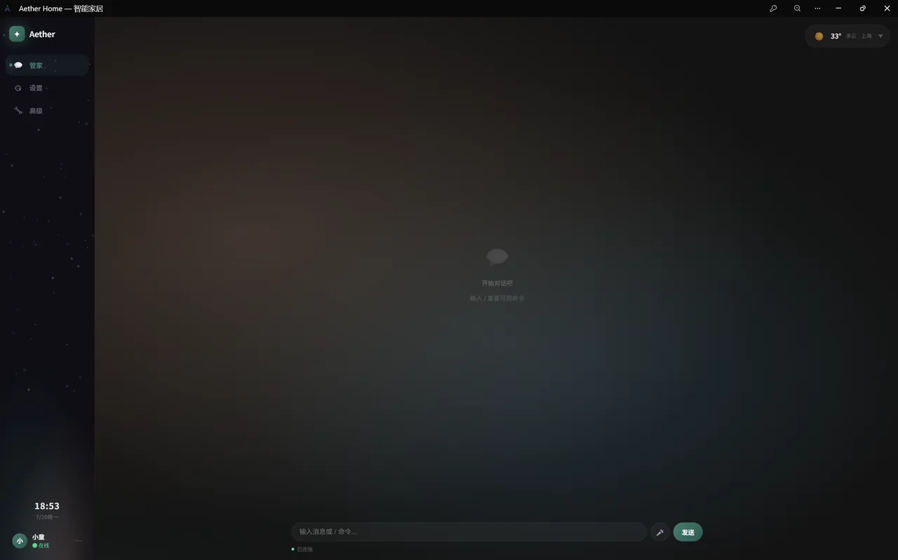
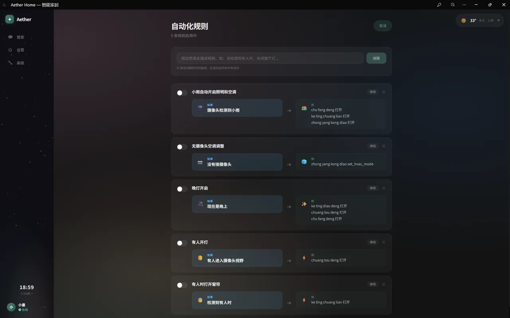
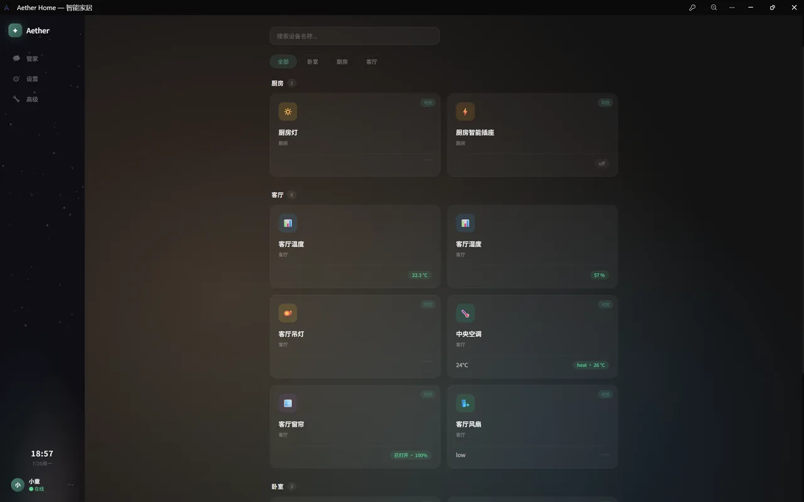
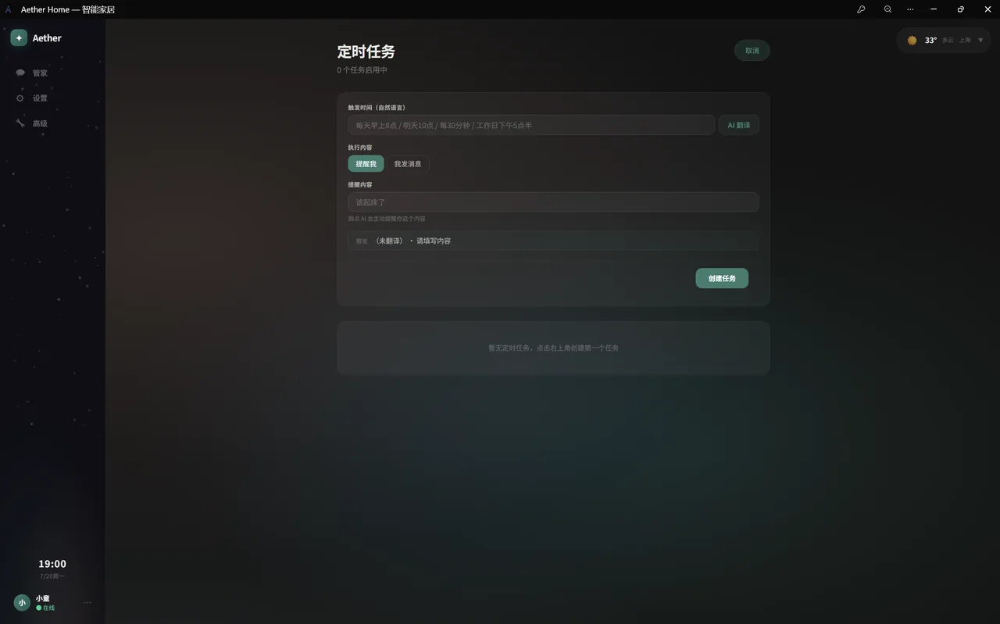
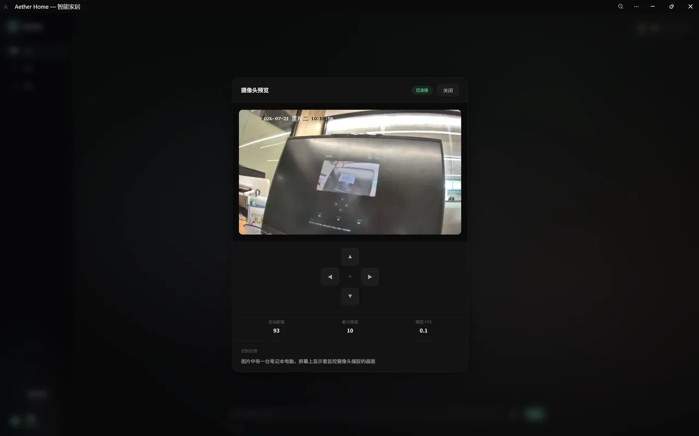
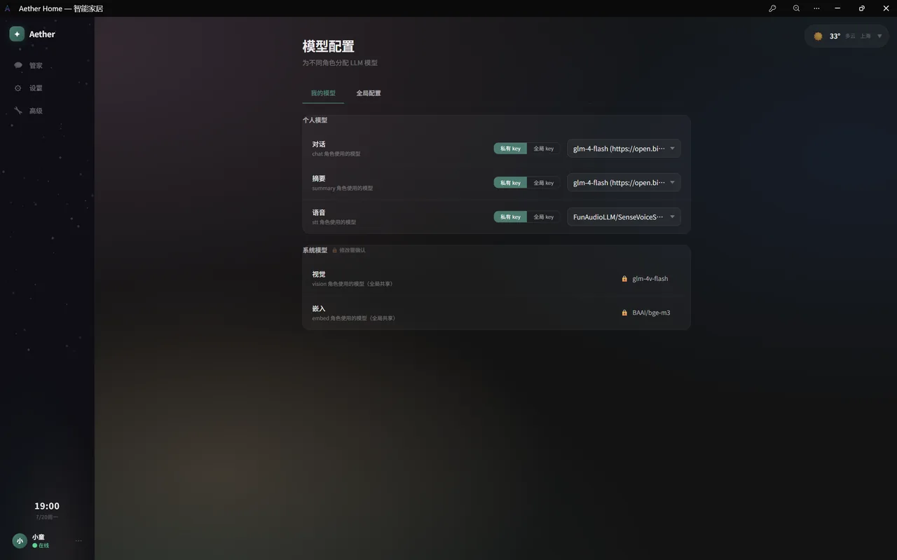
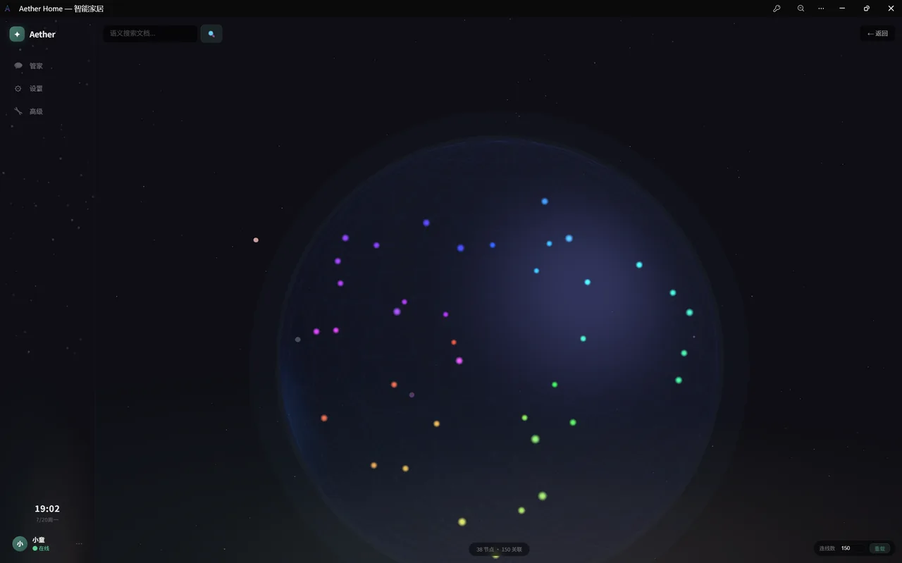

Aether 把大模型接进 Home Assistant——一句话控设备、一句话建自动化；执行前有校验，执行后有回读，像一位真正靠谱的管家。
Docker 一键部署 · 内置 10 类演示设备 · 无需真实硬件即可体验
从一个命令到一整套智能生活，每一条都长在源码里
24 个内置工具随口调用：控设备、建规则、配场景、查操作记录、联网搜索、抓网页。WebSocket 流式回复、语音输入、17 个斜杠命令，聊天窗口就是控制台。
「下雨就关窗」直接生成规则草稿——时间、天气、视觉、在场、日出日落、日历、虚拟开关 7 类条件自由组合，说「确认」才生效，改规则也是一句话。
每条指令下发后回读 Home Assistant 真实状态核对，不符就如实告诉你「没执行成功」；LLM 编造的设备名会被存在性校验拦下，并附最接近的真实设备自动纠正。
RTSP / USB / HA 相机全支持，dHash 运动检测微秒级完成、几乎不吃 CPU。按摄像头配置关注项——只有关注的事出现才推送；PTZ 云台转向一句话指挥。
WebSocket 长连接 + 扫码一键绑定，不需要公网 IP、不需要内网穿透。群里 @它 就能控家，摄像头异常主动找你；凭证在管理页热改热连。
家庭文档与设备信息向量化（faiss 秒级检索），LLM 抽取实体关系构建 three.js 3D 球状图谱，可漫游、可搜索、可对着文档提问，构建支持断点续传。
什么条件都能触发，怎么执行都有讲究——不把鸡蛋放进一个篮子
触发条件编译成 Home Assistant 原生自动化，到点毫秒级精确触发，动作仍回到 Aether 执行，支持 and / or / not 组合。
时间与天气规则每 30 秒、视觉规则每 60 秒静默评估一轮；HA 委托写入失败时自动降级回本地，规则不失效。
订阅 state_changed 实时事件驱动在场、日出日落、虚拟开关类规则，状态一变立即评估，无轮询延迟。
每 5 分钟对齐日历日程的开始与结束，去重防重复触发——「开会时静音」这类日程联动也能稳稳落地。
让 AI 管家「敢放手用」的，不是模型多聪明，而是错了能兜住
HA 对不存在的实体也会静默返回成功——Aether 先比对真实设备列表，编造的名字直接拦截，并附 5 个最接近的真实设备让模型自愈重试。
门锁、童锁可一键标记「禁止 AI 操作」：命中即拒绝执行，且这些设备对模型完全不可见——连误指名的机会都没有。
「开灯」匹配到多盏灯时弹框让你勾选，说「所有灯」才全开；「打开加湿器」绝不会错开空调——语义错配直接拒绝。
每条指令执行后延时回读 HA 真实状态与预期比对，不符就在结果里标记「未验证」，强制模型如实汇报，绝不谎报成功。
生成的规则动作经领域 / 服务 / 实体 / 参数四重校验，重试仍错则自动替换为最接近的真实设备；模糊指令先弹窗确认再执行。
「它不是不犯错，而是错了会告诉你——这是管家和玩具的区别。」
从你按下发送到设备真的动起来，中间是一条代码级流水线——不是「把话丢给大模型」那么简单。
拉取 HA 设备目录与控件备注、主摄像头视觉关注项、过期对话摘要，组装成 system prompt；命中混合思考模型时注入思考软开关降首字延迟。
dispatcher._prepare_context按回合意图裁工具面：full / rule_create / no_create / clean 四档。clean 档让模型对 automation_rule_* 整族无感知——工具名本身就是泄漏源，代码级隔离不靠模型自觉。
LangGraph create_react_agent 流式跑工具循环；步数预算 recursion_limit=16，每个工具轮 model→hook→tools 消耗 3 步。
post_model_hook 剔除已成功的工具签名、只补失败的那几个（代码约束，非提示词）；预算耗尽不报错，走「总结已完成部分」收尾轮。
ValidatorAgent 三级核查：正则命中三时态表态 → 设备指称模糊匹配 → 读 HA 真实状态核对（白名单域，零 LLM 调用）→ 不符则定向重试并注入真实状态。
validator_agent.should_retrySSE / WebSocket 逐事件推 token / tool_start / tool_end；entity_id 实时翻译友好名（light.bed → 床头灯），打字机效果。
这些不是功能清单上的卖点，而是让 AI 管家「敢放手用」的代码级兜底。
控制后延时读 HA 真实状态比对，不符标「未验证」。白名单域 light/switch/fan/cover… 陌生域语义不可靠不核。
已完成 / 进行中 / 将来时正则宽覆盖，误报由下游实体核对过滤；纯闲聊零 LLM 调用，不再每轮白付一次校验。
clean 档剔除 automation_rule_* 整族；rule_create 档剔除 scheduled_task_create——防弱模型把「创建规则」路由去定时任务。
唯一活草稿 + 裸「确认 / 好的 / 嗯」词 → 系统确定性落库，跳过模型。弱模型确认轮高频幻觉「已生效」，收口成代码动作。
recursion_limit 耗尽不是故障，是模型陷入工具循环——注入「停止调工具、总结已完成部分」收尾轮，不把半截回复丢给你。
已成功工具签名传给 hook，重试轮代码层剔除；unresolved_failed 跨轮追踪，重试空转时收尾兜底生成失败说明。
每用户用自己的 chat key 构建 agent + validator LLM；会话归属校验，拒绝接管他人会话（SessionOwnershipError）。
命中混合思考模型时注入思考软开关，闲聊 / 控制场景关思考降首字延迟；只改发送副本，不回写污染对话历史。
每一处交互，都为「让家更懂你」而设计
输入自然语言即可控制家中设备，AI 流式回复、Markdown 渲染、结构化设备卡片，多轮对话上下文连贯。

用自然语言描述需求，AI 自动拆解成条件卡片与动作卡片，触发什么、执行什么清清楚楚；启停一个开关，改规则像聊天一样简单。

灯光的亮度色温、空调的温度模式、窗帘的开关进度——所有状态可视化呈现，也可直接在面板操控。

自然语言描述需求，Aether 自动解析并生成 cron 表达式，任务名也是 AI 起的，回复支持文字推送与小爱音箱语音播报。

多路摄像头实时分析画面，dHash 运动检测微秒级完成，按摄像头配置关注项——只有关注的事出现才触发通知。

对话、摘要、语音识别、视觉、嵌入各角色独立配置模型，谁擅长谁来；家庭成员各用各的 API Key，互不影响。

LLM 从家庭文档与设备信息中抽取实体与关系，构建成 3D 球状知识图谱，语义搜索定位节点，文档问答随口就问。

自动聚合近 7 天的家庭事件与 Home Assistant 长期统计，LLM 提炼成 250 字以内的人话总结，准时推送到飞书，在线也能回看。
自动化触发了几次、定时任务成功率多少、这周用了几度电——不用翻记录，扫一眼周报就知道。
错过推送也不怕：每 6 小时补偿检查一次，周报永远补得上。
203 个 pytest 测试文件 · CI 三道关：单测回归（20 分钟挂死护栏）/ 真实进程 E2E / 前端 Vitest · ruff 静态检查 · 健康探针 30 秒自愈重启
Docker 一键部署，内置 10 类演示设备，无需真实硬件
复制环境变量与配置模板，填入 LLM / STT 的 API Key。
一条命令拉起 aether、homeassistant、mosquitto、simulator；带 --profile simulator 才会附带 10 类演示设备（生产环境可去掉，之后也能在「高级配置 → 虚拟设备」随时开关）。
浏览器访问 https://localhost:8010（HTTPS 自签证书），按引导完成家庭信息、模型配置与 Home Assistant 连接，然后对它说「打开客厅灯」试试。
提示：导入 certs/rootCA.crt 可消除浏览器证书警告；想完全离线跑本地模型，docker compose --profile local-llm up -d ollama 一条命令即可。